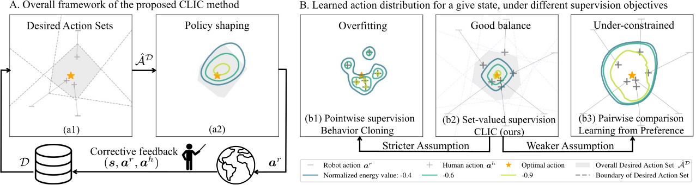
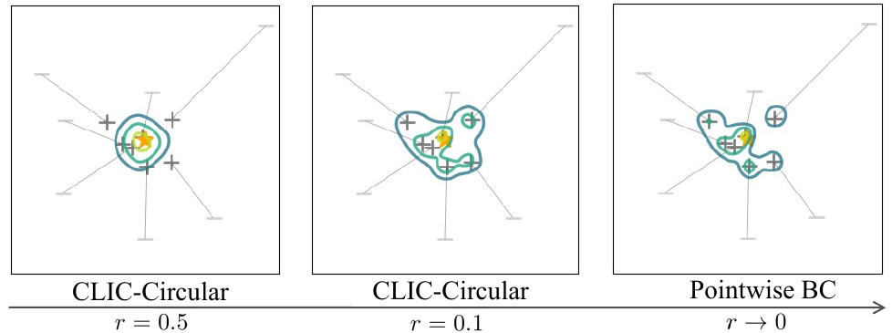

Action Supervision for Learning from Corrective Feedback

Abstract. Behavior cloning (BC) optimizes policies by treating human demonstrations as pointwise action labels. While effective with accurate action labels, this formulation is brittle in practice: when human-provided actions are imperfect, treating each label as an exact target can steer the policy away from the underlying desired behavior, particularly when expressive models are used (e.g., energy-based models). As a result, we propose a human-in-the-loop alternative that replaces pointwise supervision with set-valued action targets.
We introduce Contrastive policy Learning from Interactive Corrections (CLIC). CLIC leverages human corrections to construct and refine sets of desired actions, and optimizes a policy to place probability mass over these sets rather than over a single action target. This formulation naturally accommodates both absolute and relative corrections and can represent complex multimodal behaviors. Extensive simulation and real-robot experiments show that the proposed approach leads to effective policy learning across diverse settings: CLIC remains competitive with the state of the art under accurate data while being substantially more robust under noisy, relative, and partial feedback.
Highlights
CLIC aggregates corrective feedback into progressively refined desired action sets (gray) while updating the policy accordingly.

Pointwise supervision in Implicit BC arises as a limiting case of CLIC’s set-valued supervision: with circular desired action sets, the set collapses to a single action as the radius goes to zero.
Ball catching: Quick coordination with
partial feedback to the end effector
or the robot hand.
Water pouring: Learning full pose
control to precisely pour
liquid (marbles) into a bowl.
Insert-T: Learning long-horizon multi-
modal task that inserts the T-shape
object into the U-shape object.
Simulation benchmarks
We evaluate CLIC on four simulation tasks under diverse feedback settings, including accurate, noisy, relative, and partial feedback. These experiments show that set-valued supervision remains competitive under accurate feedback and is more robust under imperfect feedback.
- CLIC remains competitive with pointwise BC under accurate feedback.
- CLIC shapes implicit policies effectively, whereas pairwise comparison alone is too weak.
- CLIC remains robust while baselines degrade under noisy feedback.
- CLIC-Half and CLIC-Explicit robustly learn from partial and relative corrections where pointwise supervision fails.
Example post-training rollouts under accurate absolute corrections are shown below:
Real World Insert-T Task
The Insert-T task requires the robot to insert a T-shaped object into a U-shaped object by pushing. We categorize the task into three difficulty levels, and examples of the post-training policy rollouts for each level are shown below:
Insert-T 'Easy' category:
Insert-T 'Medium' category:
Insert-T 'Hard' category:
Acknowledgements
This project is made possible by a contribution from the National Growth Fund program NXTGEN Hightech.